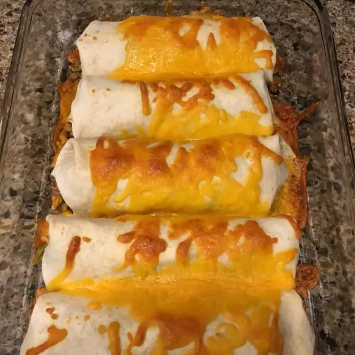

Burrito

Description
This recipe describes how to make burritos. These burritos are made in the oven. This recipe yields 4 servings.
Ingredients
- 1 pound skinless boneless chicken breasts
- 2 teaspoons Gay Lea Butter
- 1 pinch Pinch salt
- 1 pinch Pinch pepper
- 2 cups shredded Ivanhoe Old Cheddar
- ⅔ cup Gay Lea Sour Cream
- 1 cup diced green pepper
- ⅓ cup salsa
- ½ cup sliced black olives (Optional)
- 1 jalapeno pepper, seeded and minced
- 2 tablespoons chopped fresh cilantro
- 4 large flour tortillas
Steps
- Cut chicken into small 1-inch (2.5cm) cubes. In skillet, melt butter over medium high heat and cook chicken for about 8 minutes or until no longer pink inside. Salt and pepper to taste. Pour into large bowl and stir in 1/2 cup (375mL) of the cheese, sour cream, green pepper, salsa, olives, jalapeno, and cilantro.
- Preheat oven to 350 degrees F (180 degrees C).
- Divide mixture among tortillas: Fold and roll to enclose filling completely; place seam side down in small baking dish. Sprinkle with remaining cheese.
- Bake in centre of oven for about 20 minutes or until cheese is melted and tortillas are crispy.